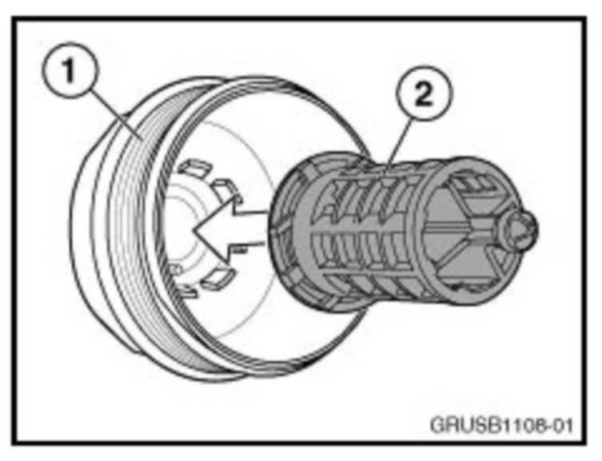
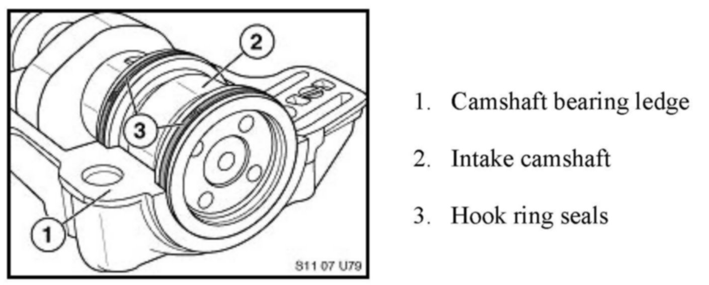
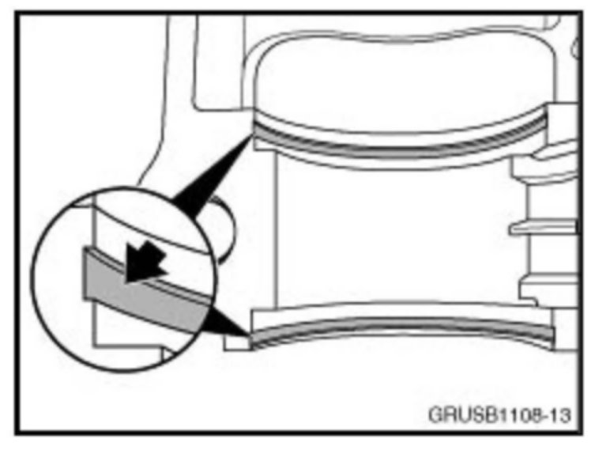
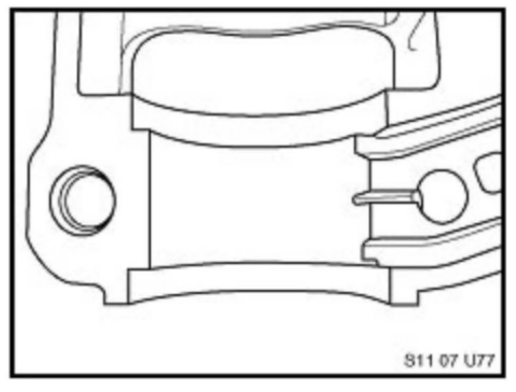
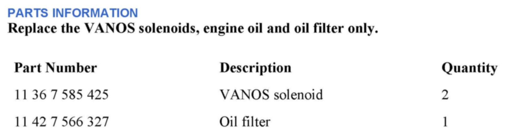
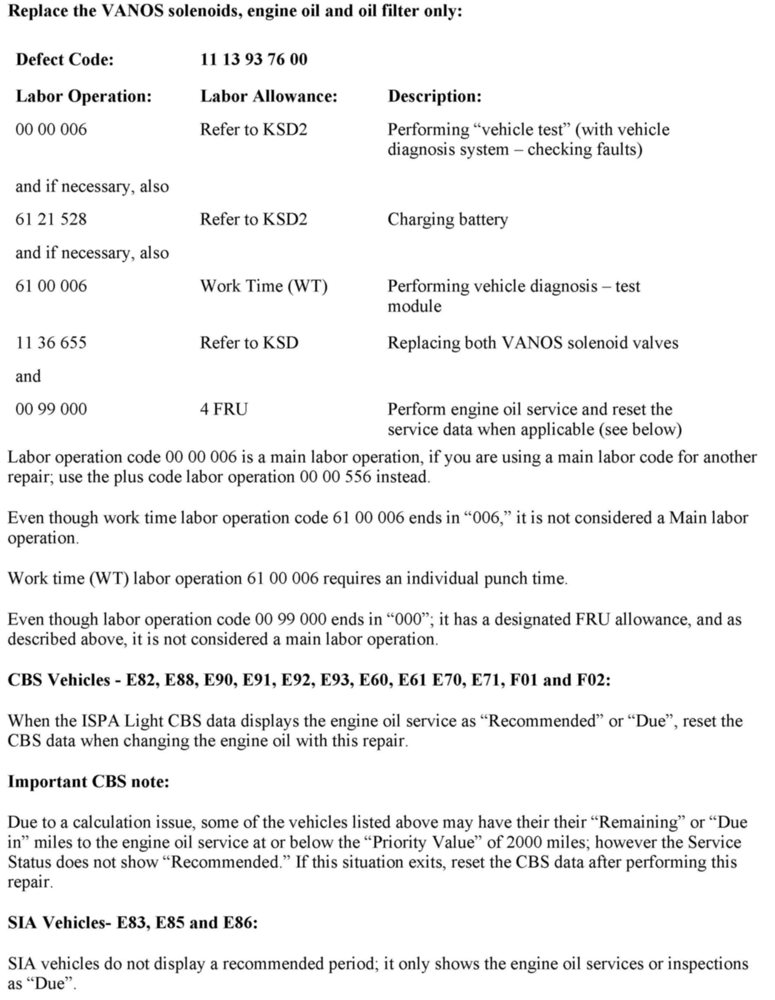
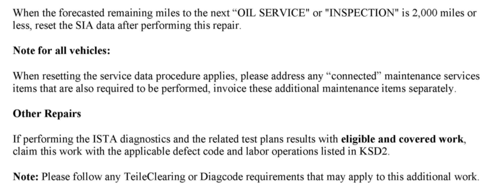

Engine - MIL/Reduced Power/Codes 2A82/2A87 Stored In DME
SI B11 02 08Engine
November 2012
Technical Service
This Service Information bulletin supersedes SI B11 02 08 dated June 2011.
[NEW] designates changes to this revision
SUBJECT
Power Reduction, FC 2A82 Intake VANOS and/or FC 2A87 Exhaust VANOS Camshaft Faults are Stored in DME
MODEL
[NEW] E82 and E88 with N51, N52K and N54 engines produced from 1/2008 to 1/2010
[NEW] E90 and E91 with N52 engine produced from 3/2005 to 6/2006
[NEW] E90, E91, E92 and E93 with N51, N52K and N54 engines produced from 7/2006 to 1/2010
[NEW] E85 and E86 with N52 engine produced from 1/2006 to 1/2010
[NEW] E83 with N52K engine produced from 9/2006 to 1/2010
[NEW] E60 and E61 with N52, N52K and N54 engines produced from 3/2005 to 1/2010
[NEW] E70 with N52K engine produced from 10/2006 to 1/2010
[NEW] E71 with N54 engine produced from 1/2008 to 1/2010
[NEW] F01 and F02 with N54 engine from start of production to 1/2010
SITUATION
[NEW] The "Service Engine Soon" (MIL) lamp is illuminated and engine power reduction is perceived.
This situation can occur after driving for some time with the engine at full operating temperature. If the ignition is cycled, the engine then usually performs normally.
The following faults are stored in the DME:
^ 2A82 VANOS intake - stiff; jammed mechanically
^ 2A87 VANOS exhaust - stiff; jammed mechanically
^ [NEW] 130108 VANOS intake: control fault, position not reached
^ [NEW] 130308 VANOS exhaust: control fault, position not reached
^ [NEW] For the N54 engine, the following secondary faults may also be stored:
^ [NEW] 120408 Charge-air pressure control, cut-out: Boost pressure accumulation blocked
^ [NEW] 3100 Boost-pressure control, deactivation - boost-pressure buildup prohibited
[NEW] CAUSE
The VANOS faults can be caused by an insufficient oil pressure supply to the inlet VANOS adjustment unit. To effectively move the camshafts to the target positions in the specified time and under all engine conditions, sufficient oil pressure supply to the VANOS control pistons must always be available.
If engine operation requires the VANOS system to quickly advance or retard the intake or exhaust camshaft, faults may be stored if the camshaft is "late", or does not reach the target position. In this situation, engine power may be reduced and a check control message is displayed.
The consequential fault 3100 or 120408 can also be set in the DME fault memory as well.
PROCEDURE
1. Perform all applicable test plans completely for the faults stored.
A mechanical restriction or electrical failure of the VANOS solenoid and/or the electrical circuit can cause insufficient oil supply to the VANOS assemblies as well.
If the completed test plans results are inconclusive, then proceed to step 2.

2. The oil filter cap insert may have been inadvertently removed during the vehicles last oil service. If this insert is not installed, it will result in non-filtered engine oil being supplied to the engine, thus possibly clogging or damaging the VANOS solenoids.
If the oil filter cap insert is found to be missing, the entire oil filter housing cap must be replaced (refer to the EPC).
Note:
Repairs related to step 2 are not considered a defect in materials or workmanship.
3. [NEW] Replace both VANOS solenoids, change the engine oil and filter, and reset the service data only when applicable, as outlined in the Warranty Information section. Drive the vehicle to verify effectiveness.
INFORMATION ONLY - CAMSHAFT BEARING LEDGE WEAR ASSESSMENT
While performing the test plan for the VANOS faults stored (ABL-DIT-B1214_NGNWA or E), the inspection of the camshaft hook ring seals is advised in "step 5 of these test plans".
Below are detailed illustrations of worn camshaft bearing ledges, and the acceptable wear of the camshaft bearing ledge.

1. Camshaft bearing ledge
2. Intake camshaft
3. Hook ring seals

[NEW] Note the deep grooves worn into the camshaft bearing ledge by the camshaft hook ring seals. The camshaft bearing ledge is worn.
[NEW] See the magnification call-out in the illustration for a detailed description of the wear.

[NEW] Acceptable camshaft bearing ledge - minor gray wear marks from the rotation of the camshaft are normal. If deep groves are not apparent, the camshaft bearing ledge is acceptable and should not be replaced.
[NEW] Do not replace parts that are not worn.
IMPORTANT:
The applicable test plans for the faults stated in this bulletin may advise replacement of the entire intake or exhaust camshaft. This statement is an error, and will be corrected with ISTA/D 2.34.0. Do not replace the entire intake or exhaust camshaft; if applicable, only replace the bearing ledge and rectangular hook rings on the affected camshaft for the VANOS fault stored in DME Memory.

PARTS INFORMATION


[NEW] WARRANTY INFORMATION